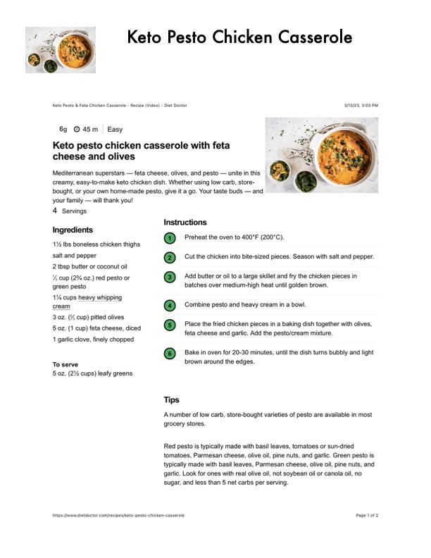

Keto Pesto Chicken Casserole

Original cookbook page 438
Ingredients
- 1% lbs boneless chicken thighs
- salt and pepper
- 2 tbsp butter or coconut oil
- %, cup (2% oz.) red pesto or
- green pesto
- 1% cups heavy whipping
- cream
- 3 oz. (7% cup) pitted olives
- 5 oz. (1 cup) feta cheese, diced
- 1 garlic clove, finely chopped
- To serve
- 5 oz. (2% cups) leafy greens
Instructions
- Preheat the oven to 400°F (200°C).
- Cut the chicken into bite-sized pieces. Season with salt and pepper.
- Add butter or oil to a large skillet and fry the chicken pieces in
- batches over medium-high heat until golden brown.
- Combine pesto and heavy cream in a bowl.
- Place the fried chicken pieces in a baking dish together with olives,
- feta cheese and garlic. Add the pesto/cream mixture.
- Bake in oven for 20-30 minutes, until the dish turns bubbly and light
- brown around the edges.
Recipe #438 from collection